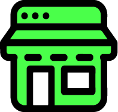

<ion-header>
  <ion-toolbar color="primary"> 
    <ion-button fill="clear" style="color: white;" [routerLink]="['/dashboard/profile']">
      <ion-icon slot="icon-only" name="arrow-back"></ion-icon>
    </ion-button>
    
    <ion-searchbar *ngIf="isSearch" placeholder="Buscar negocio" [(ngModel)]="searchFilter" name="searchFilter" 
        (ionChange)="searchForBusiness($event, businessList)"></ion-searchbar>
    <ion-button slot="end" fill="clear" style="color: var(--ion-color-primary-contrast)" (click)="toggleSearch()">
      <ion-icon *ngIf="!isSearch" slot="icon-only" name="search"></ion-icon>
      <ion-icon *ngIf="isSearch" slot="icon-only" name="close-circle"></ion-icon>
    </ion-button>
  </ion-toolbar>
</ion-header>

<ion-content>
    <div class="title-bar">
      <span>Favoritos</span>
    </div>


    <ion-list *ngIf="searchBusiness.length === 0 && searchFilter.length === 0">
      <ion-item lines="none" *ngFor="let business of businessList, let i = index">
        <ion-thumbnail>
          
          
          
        </ion-thumbnail>
        <ion-label>
          <span (click)="goToBusinessDetails(business)" style="font-size: 15px;">
            <span class="business-title">{{business.businessName}}</span>
            <div class="business-status" style="color: var(--ion-color-success);" *ngIf="business.isOpened">Abierto</div>
            <div class="business-status" style="color: var(--ion-color-danger);" *ngIf="!business.isOpened">Cerrado</div>
            <div class="business-schedule">{{business.openTime}} a {{business.closeTime}}</div>
          </span>
        </ion-label>
        <ion-button fill="clear" (click)="deleteBusinessFromFavouriteList(business)">
          <ion-icon color="danger" slot="icon-only" name="trash"></ion-icon>
        </ion-button>
      </ion-item>
    </ion-list>
    
    <ion-list *ngIf="searchBusiness.length > 0 && searchFilter.length > 0">
      <ion-item lines="none" *ngFor="let business of searchBusiness, let i = index">
        <ion-thumbnail>
          
          
          
        </ion-thumbnail>
        <ion-label>
          <span (click)="goToBusinessDetails(business)" style="font-size: 15px;">
            <span class="business-title">{{business.businessName}}</span>
            <div class="business-status" style="color: var(--ion-color-success);" *ngIf="business.isOpened">Abierto</div>
            <div class="business-status" style="color: var(--ion-color-danger);" *ngIf="!business.isOpened">Cerrado</div>
            <div class="business-schedule">{{business.openTime}} a {{business.closeTime}}</div>
          </span>
        </ion-label>
        <ion-button fill="clear" color="danger" (click)="deleteBusinessFromFavouriteList(business)">
            <ion-icon slot="icon-only" name="trash"></ion-icon>
        </ion-button>
      </ion-item>
    </ion-list>
  
    <div class="no-search-matching" *ngIf="searchBusiness.length === 0 && searchFilter.length > 0" style="width: 100%; color: white; text-align: center;">
      <p><em>No existen negocios con este nombre</em></p>
    </div>
  </ion-content>
  